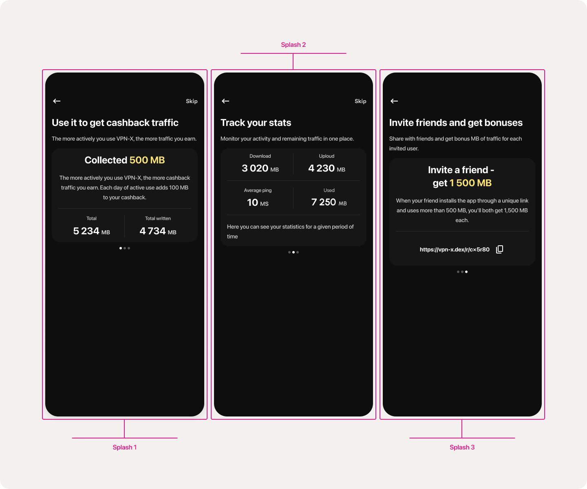
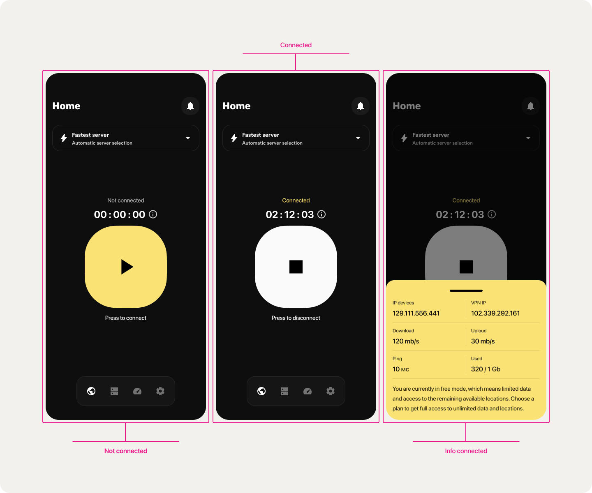
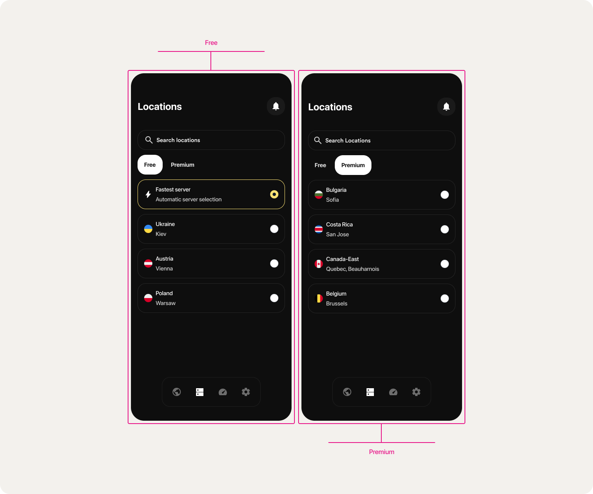

About VPN-X
It is an application that not only provides security and anonymity in the realm of virtual private networks, but also offers unique functionalities including decentralized access, a referral system and an innovative cashback program. Let's take a closer look at this exciting concept!
Task
The challenge I faced was to create an innovative mobile app that could provide users with decentralized access to virtual private networks (VPNs). I also sought to integrate a referral system and a unique cashback mechanism that would allow users to earn bonuses for using the app and redeem them for additional traffic.
Problem
The problem that many users of modern VPN services face is their centralized nature and lack of security. In addition, many existing solutions do not provide any incentives or rewards to users. My goal was to create an app that would not only solve these problems, but also provide users with additional bonuses.
Decision
As a result, it turned out to design the VPN-X DEX application, which provides decentralized access to VPN servers, ensuring the highest level of security and anonymity. With the help of a referral system, users can invite friends and receive bonuses for each new user. Users can accumulate cashback for each megabyte of traffic transferred and then exchange it for additional traffic, which makes using VPN-X DEX not only safe but also profitable.
Onboarding
Dashboard
Servers
Other screens


Conclusion
In summary, VPN-X DEX is a revolutionary application that combines security, decentralization and economic benefits. This project demonstrates how modern technology can be used to solve current problems and provide additional benefits to the user. I am proud of the results of this work and I am confident that VPN-X DEX has the potential to change the way we perceive and use VPN services.